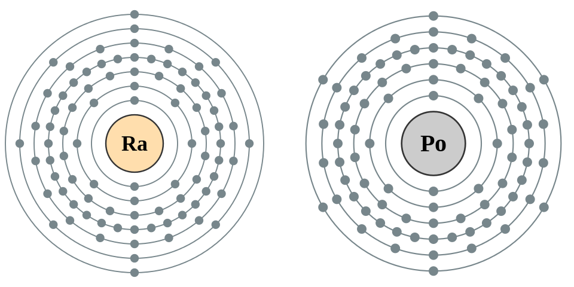

Marie Curie, född i Warszawa i Polen, Kejsardömet Ryssland, död 4 juli 1934 på Sancellemoz sanatorium i Passy i Haute-Savoie i Frankrike, var en polsk-fransk kemist och fysiker. Hon är känd främst för sin forskning kring radioaktivitet och erhöll nobelpris vid två tillfällen. Hon gifte sig 1895 med Pierre Curie och var mor till Irène Joliot-Curie och Ève Curie.
År 1903 fick hon nobelpriset i fysik tillsammans med Henri Becquerel och sin make Pierre Curie för forskningen om radioaktivitet. Hon var därmed den första kvinnliga nobelpristagaren. 1911 fick hon sitt andra nobelpris, denna gång i kemi för upptäckten av grundämnena radium och polonium. Hon fick grundämnet curium (Cm) och måttenheten Curie (Ci) uppkallade efter sig. Hon avled av aplastisk anemi 1934, troligen ett resultat av den joniserande strålning hon varit utsatt för i sitt laboratorium. Hennes anteckningar (och till och med hennes kokböcker) från 1890-talet anses på grund av sin strålningshalt vara för farliga att hantera, och förvaras i blyfodrade lådor.
Elektronkonfigurationen för Radium och Polonium som upptäcktes av Marie Curie

") för forskningen om radioaktivitet. Hon var därmed den första kvinnliga nobelpristagaren. 1911 fick hon sitt andra nobelpris, denna gång i kemi för upptäckten av grundämnena radium och polonium. Hon fick grundämnet curium (Cm) och måttenheten Curie (Ci) uppkallade efter sig. Hon avled av aplastisk anemi 1934, troligen ett resultat av den joniserande strålning hon varit utsatt för i sitt laboratorium. Hennes anteckningar (och till och med hennes kokböcker) från 1890-talet anses på grund av sin strålningshalt vara för farliga att hantera, och förvaras i blyfodrade lådor.
för forskningen om radioaktivitet. Hon var därmed den första kvinnliga nobelpristagaren. 1911 fick hon sitt andra nobelpris, denna gång i kemi för upptäckten av grundämnena radium och polonium. Hon fick grundämnet curium (Cm) och måttenheten Curie (Ci) uppkallade efter sig. Hon avled av aplastisk anemi 1934, troligen ett resultat av den joniserande strålning hon varit utsatt för i sitt laboratorium. Hennes anteckningar (och till och med hennes kokböcker) från 1890-talet anses på grund av sin strålningshalt vara för farliga att hantera, och förvaras i blyfodrade lådor.